01· Abstract
Autonomous Underwater Vehicles (AUVs) increasingly rely on seafloor docking stations for recharging and data offloading. In the final meters of docking, acoustic positioning lacks the angular resolution and update rate to provide the low-latency, centimeter-level 6-DoF relative pose that final alignment requires, so vision takes over. Active light arrays outperform passive markers in dim underwater scenes — but because all lamps lie on a single panel plane, pose recovery inherits the intrinsic two-fold ambiguity of planar configurations, and real underwater images with pose-level ground truth are prohibitively expensive to collect.
We present LightPoseNet-Select, a monocular framework that turns a single RGB image into a reliable relative pose for planar-station AUV docking. A UE5-based synthetic data system renders 55 docking trajectories (9,761 frames) under controllable turbidity, illumination, and viewing conditions, exporting semantic light-point labels, visibility flags, camera intrinsics, and ground-truth 6-DoF poses. LightPoseNet, a multi-task keypoint network, jointly predicts per-lamp heatmaps, visibility confidences, and geometric weights, and is trained with a pose-sensitivity regularization that ties image-space residuals to the SE(3) pose perturbation they induce. IPPE generates two analytic planar pose candidates, refined by weighted Levenberg–Marquardt and screened by physical feasibility; a learned BranchSelectorNet then fuses local appearance, candidate projections, and numeric pose features to pick the correct branch — gated by confidence so it overrides the default solution only when it is sure.
On the held-out test set, LightPoseNet localizes visible lamps with 1.037 px mean error (PCK@5 = 99.83%, visibility F1 = 99.93%), and the full pipeline outputs accepted poses on 99.95% of evaluable frames at 0.140 m translation and 1.35° rotation error, running at 63.5 FPS. BranchSelectorNet eliminates the most damaging ambiguity failures: seven corrected catastrophic frames drop from 39.36° to 1.38° mean rotation error — including one whose wrong branch showed only 0.109 px reprojection error while hiding a 139.6° pose error.
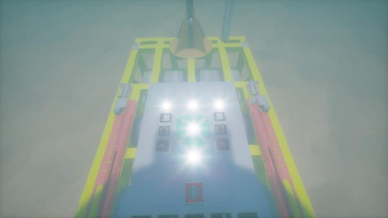
Contributions
- A UE5-based synthetic data generation system for AUV light-array docking that automatically exports semantically identified keypoint labels, visibility flags, camera intrinsics, and ground-truth 6-DoF poses under controllable water turbidity, illumination, and viewing conditions.
- LightPoseNet, a multi-task keypoint network with heatmap, confidence, and geometric-weight heads, producing sub-pixel coordinates via Soft-Argmax. A projection-Jacobian pose-sensitive regularization aligns the keypoint objective with pose accuracy, constraining both pixel error and its induced SE(3) rotation/translation effects.
- An IPPE + learned branch-selection planar pose pipeline: analytic dual candidates, weighted LM refinement, physical feasibility screening, and a BranchSelectorNet that fuses local appearance, geometric projections, and numeric pose features under a high-confidence gate.
- Validation on the synthetic test set: 1.037 px mean keypoint error, 99.95% pose acceptance, and 0.140 m / 1.35° pose accuracy under degraded underwater visual conditions.
02· Videos
Experiment Recordings
Screen recordings of the test pipeline running on synthetic docking sequences. Left: onboard camera view with live semantic-keypoint and pose overlays; right: reference top view of the AUV approaching the docking station. Click a video to play; all recordings are muted.
03· Method
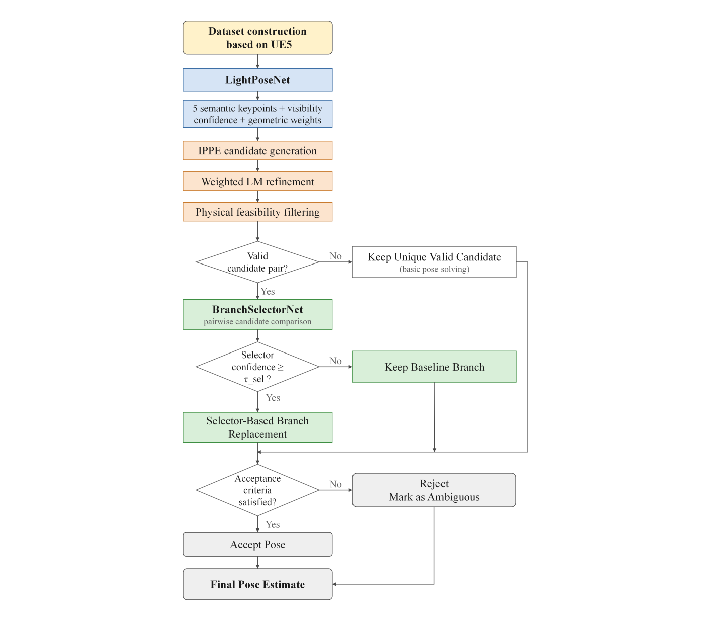
Synthetic Data Generation (UE5)
A UE5 underwater docking scene contains an AUV, a docking station carrying the T-shaped five-light planar array, and an onboard virtual camera (45° downward pitch, 100° FOV, 1280×720 at 10 Hz). Rendering parameters vary water fog density, scene brightness, and marine-snow particle density to cover typical end-game visual degradation. 55 docking trajectories — 9,761 frames — are exported with camera intrinsics, AUV/station poses, and light-array geometry, from which keypoint, visibility, and 6-DoF pose ground truth are derived via the projection model. The split is trajectory-level (33/11/11) to prevent information leakage between adjacent frames.
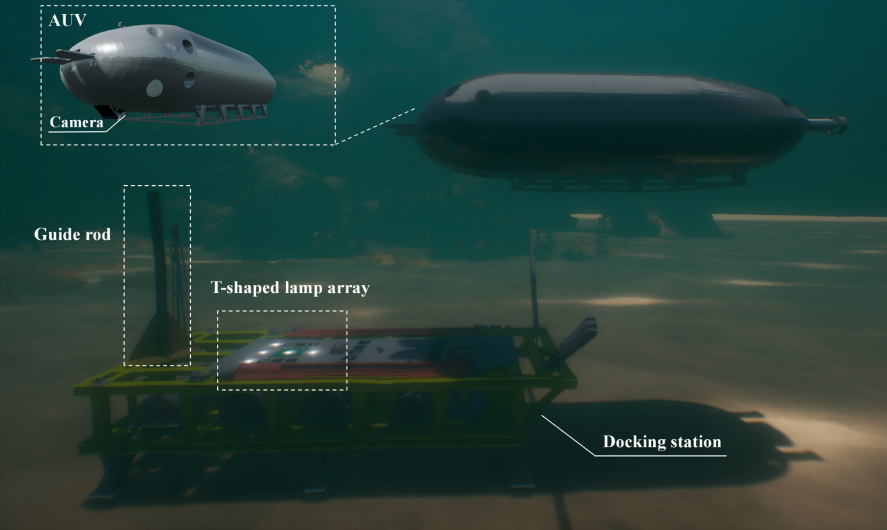
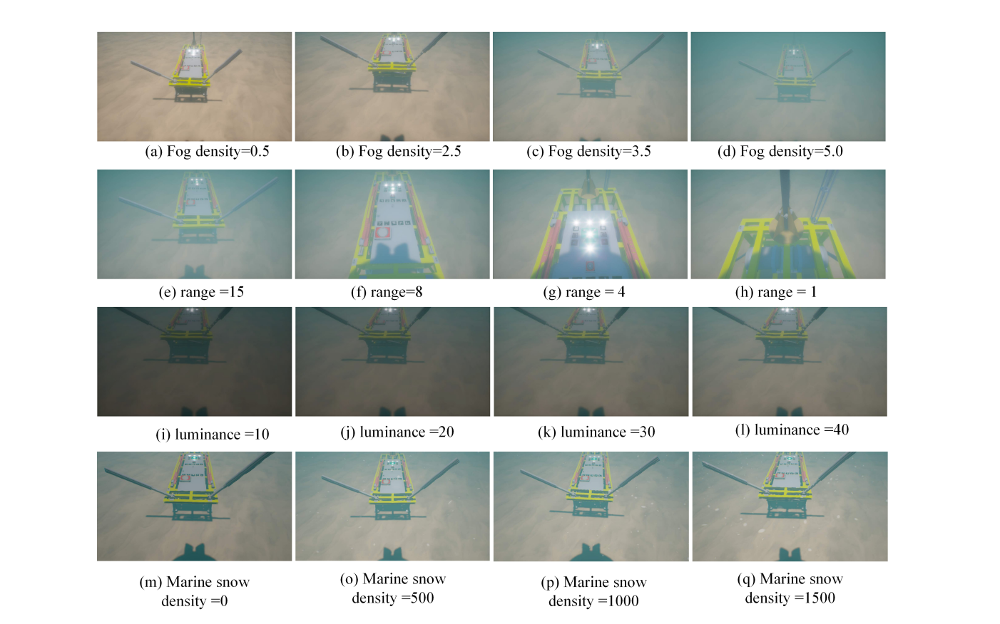
LightPoseNet: Multi-Task Keypoint Prediction
LightPoseNet is a fully convolutional encoder–decoder that casts light-array detection as named semantic keypoint prediction: each output channel is bound to one predefined lamp, so detection, identity assignment, and 2D–3D correspondence are solved in a single pass. Three parallel heads on shared features predict per-lamp heatmaps H (where the lamp is), confidences C (whether the observation is reliable), and geometric weights W (how much it should constrain the pose). Coordinates are decoded by temperature-softened Soft-Argmax for sub-pixel accuracy with differentiable gradients.
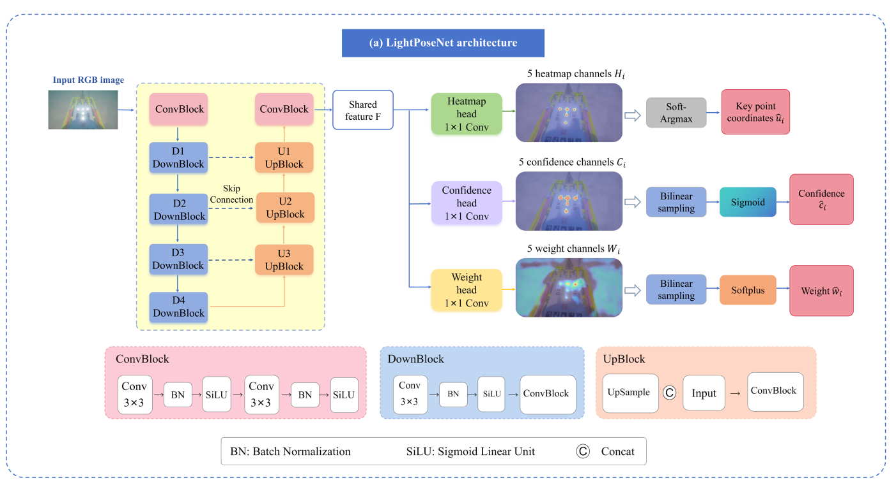
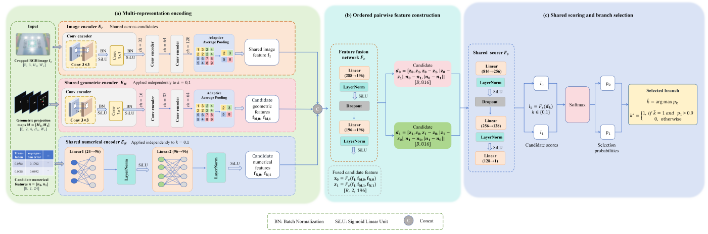
Training combines heatmap, visibility, keypoint, and weighted geometric losses with a pose-sensitive regularization: stacking the projection Jacobians of all visible lamps yields a weighted damped least-squares problem whose solution is the virtual 6-DoF pose perturbation best explaining the current keypoint residuals. Penalizing that perturbation aligns pixel-level learning with downstream pose accuracy. At inference, confidence and heatmap peaks are fused into an active-point selection score; only reliable lamps enter the pose solver.
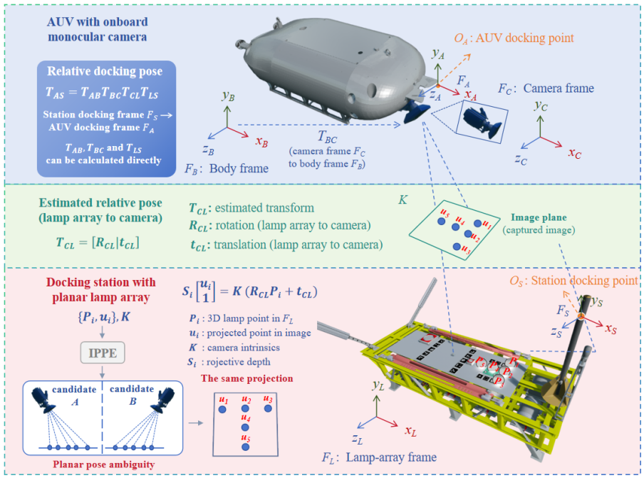
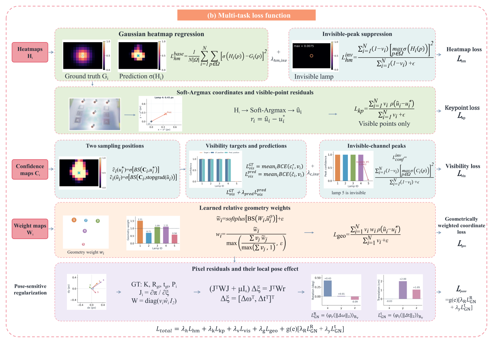
04· Qualitative Results
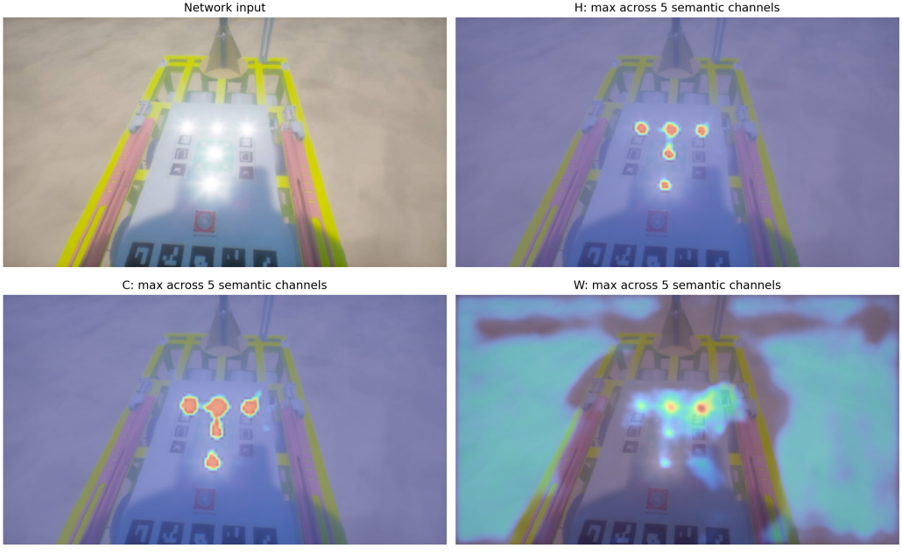
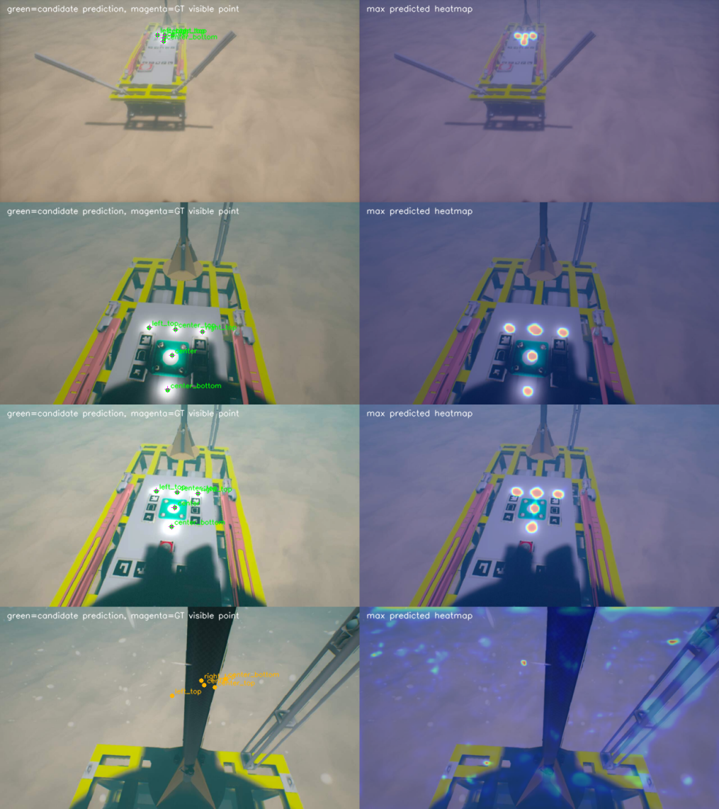
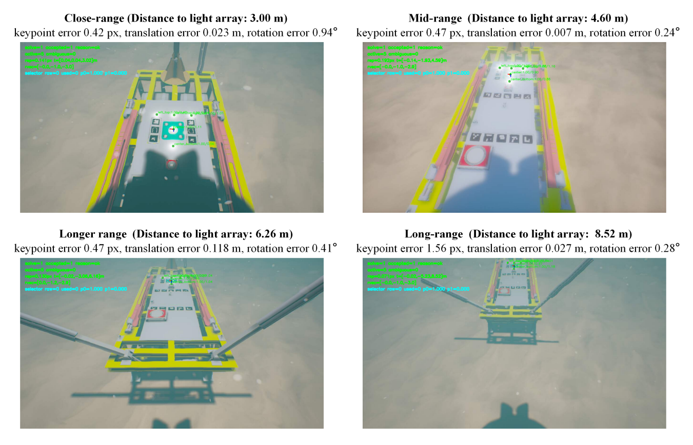
05· Evaluation
Keypoint Localization
Test set: 2,205 frames, 9,636 visible semantic lamp points. Errors are 2D Euclidean distances in full-resolution image coordinates.
| Light | Points | Mean (px) | Median (px) | P95 (px) | PCK@2 (%) | PCK@5 (%) | PCK@10 (%) | AUC@10px |
|---|---|---|---|---|---|---|---|---|
| All | 9,636 | 1.037 | 0.755 | 2.329 | 90.87 | 99.83 | 99.95 | 90.48 |
| Top-left | 1,968 | 1.110 | 0.826 | 2.843 | 83.74 | 99.64 | 100.00 | 88.90 |
| Top-middle | 1,967 | 0.864 | 0.681 | 2.126 | 93.49 | 99.85 | 100.00 | 91.36 |
| Top-right | 1,970 | 1.277 | 0.732 | 1.977 | 95.23 | 99.80 | 99.80 | 91.26 |
| Center | 1,899 | 0.938 | 0.736 | 2.260 | 91.84 | 99.95 | 99.95 | 90.74 |
| Bottom-middle | 1,832 | 0.987 | 0.817 | 2.244 | 90.01 | 99.95 | 100.00 | 90.13 |
PCK-AUC is the integral of the PCK curve over 0–10 px divided by 10. 95% of visible lamps are localized within 2.33 px.
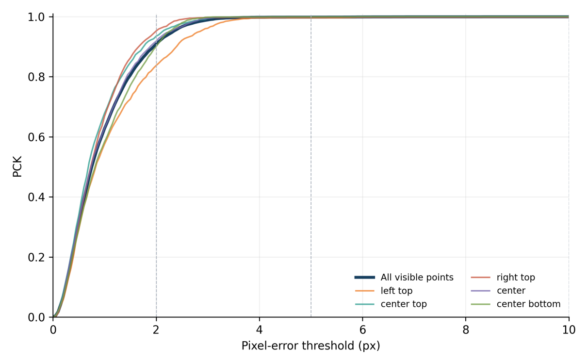
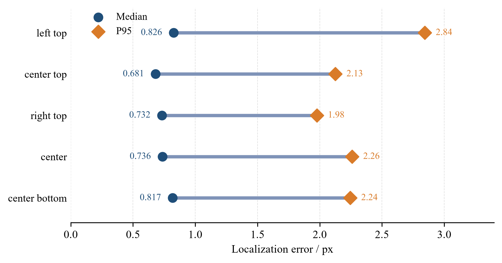
Visibility Prediction
Precision of lamp visibility decisions
Recall of lamp visibility decisions
F1 score
Across the whole test set, only 6 lamp misses and 7 false alarms on invisible lamps occurred (false-alarm rate 0.504%), showing that the network effectively suppresses spurious responses on invisible semantic channels.
Pose Estimation
Evaluated on the fixed set of 1,897 frames whose ground truth has at least four visible lamps. Translation error is the L2 norm; rotation error is the geodesic angle.
| Method | Accepted / Solvable | Translation L2 (m) ↓ | Depth err (m) ↓ | Rotation err (°) ↓ |
|---|---|---|---|---|
| Default candidate | 1896 / 1897 | 0.1413 | 0.1259 | 1.488 |
| Strict rejection | 1709 / 1897 | 0.1262 | 0.1130 | 1.388 |
| Branch selector (ours) | 1896 / 1897 | 0.1403 | 0.1250 | 1.348 |
At the same acceptance count (99.95%), the selector reduces mean translation error from 0.1413 m to 0.1403 m, depth error from 0.1259 m to 0.1250 m, and rotation error from 1.488° to 1.348°. Strict rejection scores lower only by discarding 188 ambiguous frames (acceptance drops to 90%) — a precision–coverage trade-off, not a better solver.
Accuracy vs. Distance
The docking station is 8 m long; the light array guides the final approach roughly between 2–10 m. Below 2 m the camera can no longer see all five lamps, and fewer than five correspondences degrade the solution.
| Distance | Accepted frames | Translation mean (m) | Rotation mean (°) |
|---|---|---|---|
| < 2 m | 6 | 0.064 | 8.502 |
| 2–4 m | 419 | 0.029 | 1.724 |
| 4–6 m | 365 | 0.041 | 0.894 |
| 6–8 m | 345 | 0.101 | 1.190 |
| ≥ 8 m | 761 | 0.268 | 1.373 |
In the primary docking range of 2–6 m, x/y-axis errors stay below 1 cm and rotation near 1°; most residual translation error concentrates on the depth (z) axis — the inherent depth degeneracy of a planar array.
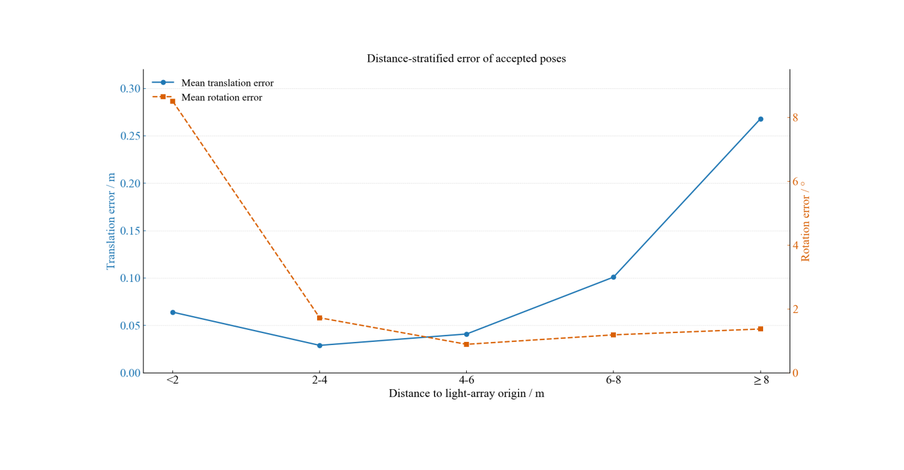
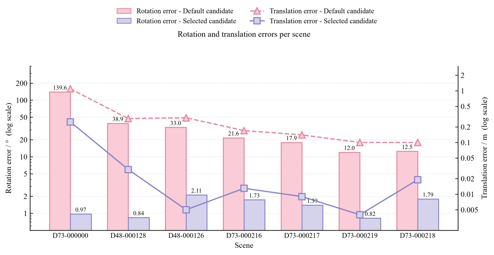
| Distance | |Δx| (cm) | |Δy| (cm) | |Δz| (cm) | |δθx| (°) | |δθy| (°) | |δθz| (°) |
|---|---|---|---|---|---|---|
| < 2 m | 0.32 | 3.31 | 5.48 | 8.200 | 1.828 | 0.980 |
| 2–4 m | 0.17 | 0.70 | 2.75 | 1.472 | 0.561 | 0.250 |
| 4–6 m | 0.48 | 1.00 | 3.84 | 0.522 | 0.476 | 0.303 |
| 6–8 m | 0.65 | 3.83 | 9.23 | 0.813 | 0.512 | 0.592 |
| ≥ 8 m | 1.56 | 12.36 | 23.56 | 0.646 | 0.902 | 0.504 |
Mean absolute per-axis translation error (camera frame) and Rodrigues rotation-error components.
BranchSelectorNet Analysis
Among 1,896 valid dual-candidate frames, 27 carried wrong-branch results that would cause severe long-tail errors, including large-angle flips. With the fixed 0.90 confidence gate, BranchSelectorNet made 7 correct switches and 0 wrong switches. On the same 1,896 accepted frames, catastrophic rotations above 10° drop from 10 frames to 3, above 30° from 4 to 1, and the single frame above 90° is eliminated.
Mean rotation error of the 7 corrected catastrophic frames (−96.5%)
Their mean translation error (−85.0%)
Worst-case fix: frame D73-000000, switched at 0.9988 confidence
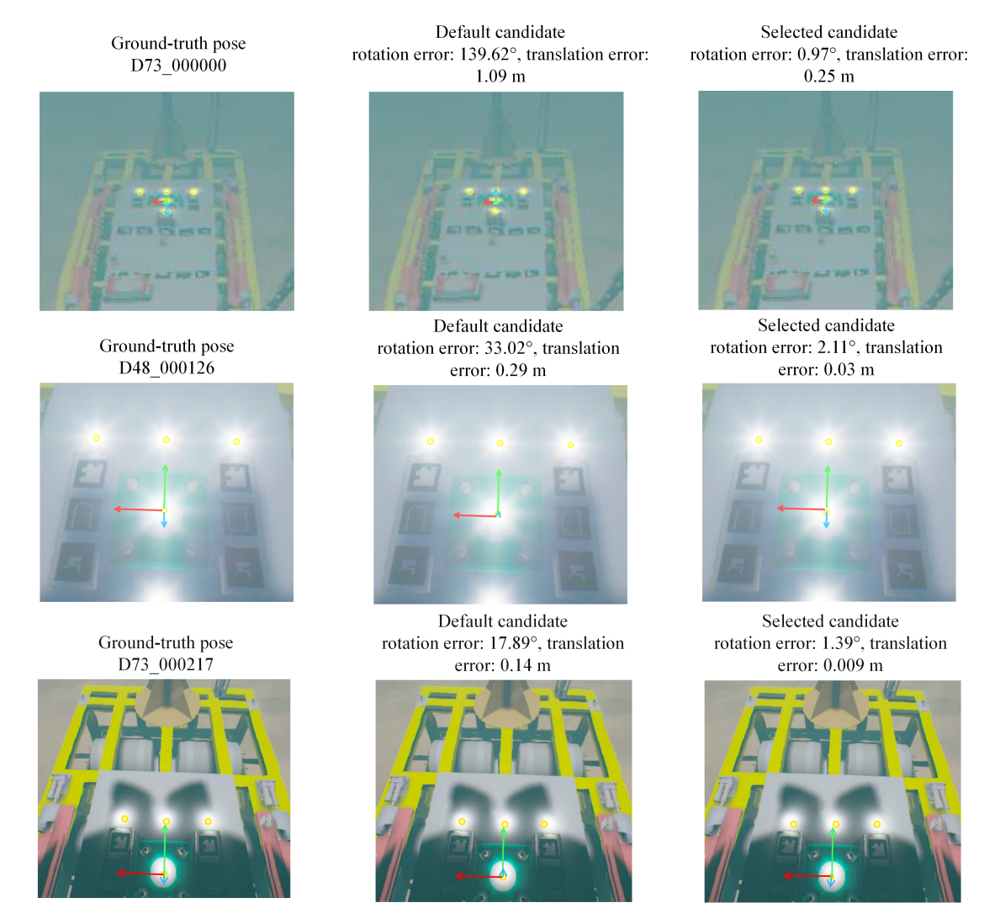
Runtime
Full pipeline (detection + pose solving + selection), single RTX 4070 SUPER
Average throughput, well above the 10 Hz camera rate
LightPoseNet 6.377 M + BranchSelectorNet 0.708 M
06· Citation
@article{lightposenet2026,
title = {LightPoseNet-Select: Monocular Pose Estimation for AUV
Underwater Docking with a Planar Light Array},
author = {Author, One and Author, Two and Author, Three},
journal = {TODO},
year = {2026}
}